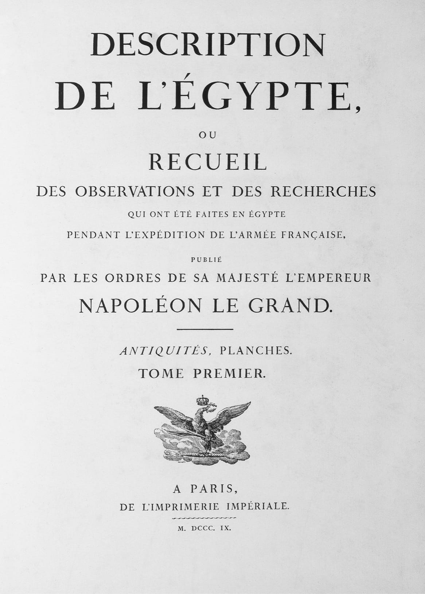

Biên giới của các quốc gia hoặc là những dòng sông lớn, hoặc là những dãy núi, hoặc là những sa mạc. Trong tất cả các chướng ngại kể trên với việc di chuyển của một đạo quân, thứ khó vượt qua nhất là sa mạc.
– Châm ngôn số 1 về quân sự của Napoleon
Quyết định chặt đứt một bàn tay của tất cả binh lính mà Caesar đưa ra là vô cùng tàn bạo. Ông ta khoan dung với đồng bào mình trong cuộc nội chiến, nhưng tàn nhẫn và thường hung bạo với người Gaul.
– Napoleon, Caesar’s Wars
(Những cuộc chiến tranh của Caesar)
⚝ ✽ ⚝
Sau khi Desaix đã đánh bại Murad Bey trong trận Samhoud vào tháng Một năm 1799, chiếm được thủy đội của ông ta trên sông Nile và chấm dứt mối đe dọa từ Thượng Ai Cập, nền cai trị của Napoleon đã mở rộng ra gần như toàn Ai Cập. Giờ đây ông có thể thực hiện cuộc tấn công nhằm vào Jezzar. Ông viết cho Đốc chính vào ngày rời khỏi Cairo, rằng ông hy vọng không cho Hải quân Hoàng gia Anh có cơ hội sử dụng các cảng ở Levantine như Acre, Haifa, và Jaffa, cổ vũ người Ki-tô giáo ở Lebanon và Syria nổi dậy chống lại người Thổ, và sau đó quyết định xem sẽ tấn công Constantinople hay Ấn Độ. “Chúng tôi có vô vàn kẻ thù để khuất phục trong cuộc viễn chinh này”, ông viết, “sa mạc, dân bản xứ, người Ả rập, người Mamluk, người Nga, người Thổ, người Anh”. Việc nhắc tới người Nga không đơn thuần là phép ngoa dụ kiểu Napoleon; Sa hoàng Paul I(*) căm ghét mọi thứ đại diện cho Cách mạng Pháp và coi mình là người bảo vệ cho các Hiệp sĩ Malta (quả thực, ông ta đã tổ chức việc tự bầu mình làm Đại Trưởng giáo kế nhiệm von Hompesch). Vào ngày Giáng sinh năm 1798, ông ta đã liên minh với kẻ thù truyền thống của Nga là Thổ Nhĩ Kỳ, cũng như với Anh, và lên kế hoạch phái một đạo quân Nga tiến sâu vào Tây Âu. Song lúc này Napoleon không hề biết gì về chuyện đó.
Các sử gia từ lâu đã ghi nhận lời nói của Napoleon là ông dự định tiến xa hơn Acre, có thể tới Constantinople hay thậm chí Ấn Độ, song vì ông chỉ mang theo 13.000 quân, chiếm một phần ba số quân của ông tại Ai Cập, nên điều này khó là sự thật. Kể cả nếu Acre có thất thủ, và các cộng đồng Druze, Ki-tô giáo, và Do Thái đều ngả theo ủng hộ ông, thì các hạn chế về hậu cần và quân số cũng sẽ không cho phép thực hiện một cuộc tấn công tới Thổ Nhĩ Kỳ hay Ấn Độ, cho dù bởi một vị tướng đầy tham vọng và năng lực như Napoleon. Sau này ông tuyên bố, rằng với sự giúp đỡ của những ông hoàng Mahratta Ấn Độ, ông đã có thể tống cổ người Anh khỏi Ấn Độ bằng cách hành quân tới sông Ấn, có nghỉ tương đối lâu bên sông Euphrate, tốc độ 24 km một ngày qua sa mạc, các bệnh binh, đạn dược và lương thực được tải bằng lạc đà một bướu, mỗi ngày một người lính được cấp một cân(*) gạo, bột mì, và cà phê. Thế nhưng khoảng cách giữa Acre và Delhi là hơn 4000 km, và cuộc hành quân sẽ phải vượt qua toàn bộ chiều rộng của Syria, Iraq, Iran, và Pakistan ngày nay, cũng như một phần Bắc Ấn Độ, xa hơn cuộc hành trình của ông từ Paris tới Moscow. Vấn đề hậu cần hẳn sẽ không thể giải quyết được; những kế hoạch này chỉ là các ý tưởng viễn vông lấy cảm hứng từ các cuộc chinh phạt của Alexander Đại đế.
Vào tháng Hai năm 1799, mục tiêu trước mắt của Napoleon là ngăn chặn trước cuộc tấn công trên đất liền vào Ai Cập từ phía đông như ý đồ của Quốc vương, với sự hỗ trợ của Jezzar, trước khi quay lại đối phó với cuộc tấn công đổ bộ từ đường biển của Ottoman lên phía bắc Ai Cập mà ông đã trông đợi từ lâu sẽ diễn ra vào mùa hè năm đó – thật may là hai cuộc tấn công không được phối hợp với nhau. Đây chính là chiến lược vị trí trung tâm quen thuộc của ông ở không gian rất rộng. Ngày 25 tháng Một năm 1799, ông viết cho Tipu Sahib, kẻ thù số một của Anh tại Ấn Độ, thông báo việc ông “sắp sửa tới bờ Biển Đỏ cùng một đạo quân đông đảo và bất khả chiến bại, sôi sục với mong muốn giải thoát các vị khỏi cùm sắt của Anh”. Một chiếc tàu tuần dương Anh bắt được lá thư, và Tipu bị giết khi thủ đô Seringapatam của ông ta bị đánh chiếm bởi viên trung tướng Anh trẻ tuổi và rất gây ấn tượng, Arthur Wellesley, vào tháng Năm năm đó. Ý định của Napoleon nhiều khả năng chỉ đơn thuần là gieo rắc thông tin đánh lạc hướng, vì ông biết thư của mình sẽ rơi vào tay kẻ thù.
Để lại Desaix ở Thượng Ai Cập, Marmont ở Alexandria và Tướng Charles Dugua ở Cairo, Napoleon tấn công Đất Thánh với Regnier làm tiền quân, ba sư đoàn bộ binh dưới sự chỉ huy của Kléber, Bon và Lannes, và Murat chỉ huy kỵ binh. Khi binh lính hành quân rời Cairo, họ hát bài ca cách mạng sôi nổi của năm 1794 Le Chant du Départ (Khúc ca lên đường), bài hát sau này trở thành một giai điệu truyền thống của những người ủng hộ Bonaparte. Tại một hội đồng chiến tranh, vị tướng duy nhất công khai phản đối cuộc tấn công là Tướng Joseph Lagrande, người đã chỉ ra rằng Acre nằm cách họ 480 km qua sa mạc thù địch và phải vượt qua một số thành phố được phòng thủ chắc chắn, và nếu chiếm được cũng sẽ đòi hỏi phải giữ vững bằng các đơn vị đồn trú tách ra từ lực lượng tương đối nhỏ Napoleon đề xuất mang theo. Lagrande đề nghị tốt hơn nên chờ đợi một cuộc tấn công bên trong lãnh thổ Ai Cập, buộc kẻ địch phải vượt qua bán đảo Sinai thay vì đánh nhau trên đất địch. Song với cuộc đổ bộ được trông đợi sẽ xây ra vào tháng Sáu, Napoleon cảm thấy ông không thể chờ đợi; ông cần vượt qua sa mạc, đánh bại Jezzar rồi quay trở lại qua sa mạc trước khi nơi này trở thành không thể vượt qua được vào mùa hè.
Napoleon rời Cairo vào Chủ nhật, ngày 10 tháng Hai năm 1799, và tới Katieh lúc 3 giờ chiều ngày 13. Ngay trước khi rời đi, ông viết một lá thư dài gửi Đốc chính. Một câu trong đó được viết bằng mật mã, mà khi giải mã có nghĩa là: “Nếu, trong tháng Ba… Pháp ở tình trạng chiến tranh với các vị vua, tôi sẽ trở về Pháp”. Ngày 12 tháng Ba, cuộc Chiến tranh của Liên minh Thứ hai bắt đầu, với việc Pháp cuối cùng phải đối mặt với các chế độ quân chủ của Nga, Anh, Áo, Thổ Nhĩ Kỳ, Bồ Đào Nha, và Naples, cùng với Giáo hoàng.
Để vượt qua bán đảo Sinai khi đó chưa được vẽ trên bản đồ, Napoleon hẳn đã phải khắc phục những vấn đề về lương thực, nước uống, cái nóng, và những bộ lạc Bedouin thù địch. Việc ông sử dụng một đơn vị cưỡi lạc đà một bướu, có thể bắn nhanh nhờ lập thành các hàng xạ kích thay phiên nhau, và các pieu (những chiếc cọc có móc được dùng để dựng nhanh các tường lũy) sẽ còn được các đạo quân thuộc địa Pháp duy trì tới tận Thế chiến Thứ nhất. “Chúng tôi đã vượt qua 70 lieue (*) (trên 272 km) sa mạc, một việc cực kỳ mệt mỏi”, ông viết cho Desaix trên đường; “chúng tôi phải uống nước hơi mằn mặn và nhiều lúc không hề có nước. Chúng tôi đã phải ăn thịt chó, lừa và lạc đà”. Sau đó, họ cũng ăn cả khỉ.
Trong năm thiên niên kỷ vừa qua, ước tính đã có khoảng 500 cuộc giao chiến quân sự diễn ra ở khu vực giữa sông Jordan và Địa Trung Hải. Con đường dọc theo bờ biển phía tây mà Napoleon lựa chọn – tránh các tuyến đường núi và thung lũng Jordan – cũng chính là tuyến đường Alexander Đại đế đã đi qua theo hướng ngược lại. Tất nhiên, Napoleon đánh giá cao khía cạnh lịch sử của chiến dịch ông thực hiện, và sau này hồi tưởng lại, “Tôi thường xuyên đọc Sáng thế ký khi tới thăm những nơi được mô tả trong đó, và cực kỳ kinh ngạc khi thấy chúng vẫn còn đúng như Moses đã mô tả về chúng.”
Pháo đài El-Arish, cách Cairo 272 km, được bảo vệ bởi khoảng 2.000 quân Thổ đi tiền trạm và các đồng minh Ả rập của họ. Tới ngày 17 tháng Hai, Napoleon cùng quân chủ lực của ông đã tới đó, đào hào và đắp công sự pháo. Có “những lời rì rầm bực bội trong binh lính, những người đã kiệt sức và khát, những người chửi rủa các nhà bác học, trách cứ oan họ về toàn bộ chiến dịch, nhưng rồi họ cũng im ắng dần trước triển vọng hành động. Đến ngày 19, một cuộc pháo kích vào tường thành đã tạo ra những khoảng vỡ đủ lớn để cho quân vượt qua. Napoleon yêu cầu pháo đài đầu hàng, và yêu cầu này được Ibrahim Nizam đồng chỉ huy pháo đài, El-Hadji Mohammed chỉ huy lực lượng lính Maghreb, và El-Hadji Kadir viên aga (sĩ quan) của lính Arnaute,(*) chấp nhận. Những người này và các sĩ quan cao cấp của họ thề trên Koran “rằng cả họ lẫn binh lính của họ sẽ không bao giờ phục vụ trong quân đội của Jezzar, và họ sẽ không quay lại Syria trong vòng một năm, kể từ hôm nay”. Napoleon do đó đồng ý cho họ giữ lại vũ khí và trở về nhà, cho dù ông phá vỡ thỏa thuận của mình với lực lượng Mamluk khi tước vũ khí họ. Trước nửa sau thế kỷ 20, và đặc biệt là ở Trung Đông, các quy tắc của chiến tranh rất đơn giản, khắc nghiệt và về căn bản không thay đổi; hứa danh dự rồi sau đó phá vỡ lời hứa thường bị coi là một sự xúc phạm đáng tội chết.
Ngày 25 tháng Hai, Napoleon đánh bật quân Mamluk khỏi thành phố Gaza, chiếm được một lượng lớn đạn dược, sáu khẩu pháo và 200.000 khẩu phần bánh khô. “Những cây chanh, những gốc ô liu, sự cằn cỗi của địa hình trông giống hệt vùng nông thôn Languedoc”, ông viết thư cho Desaix, “trông giống như ở gần Béziers vậy”. Ngày 1 tháng Ba, ông được biết từ các tu sĩ Capuchin ở Ramleh rằng lực lượng đồn trú ở El-Arish đã đi qua trên đường tới Jaffa cách đấy 16 km, “cho biết họ không có ý định cam chịu theo các điều khoản đầu hàng mà chúng ta đã là những người đầu tiên phá vỡ khi tước vũ khí họ”. Các tu sĩ ước tính lực lượng tại Jaffa gồm khoảng 12.000 quân và “nhiều đại bác và đạn dược đã được chuyển tới từ Constantinople”. Do đó, Napoleon liền tập trung lực lượng của mình tại Ramleh trước khi đi tiếp, bắt đầu vây hãm Jaffa từ trưa ngày 3 tháng Ba. “Bonaparte lại gần, cùng vài người khác, cách chừng 90 m”, Doguereau nhớ lại về các bức tường thành Jaffa. “Khi chúng tôi quay lại thì bị theo dõi. Một trong những quả đạn pháo quân địch bắn về phía chúng tôi rơi xuống rất gần Tư lệnh, làm đất rơi như mưa xuống người ông ấy”. Ngày 6 tháng Ba, lực lượng phòng thủ thực hiện một cuộc đột kích, cho phép Doguereau thấy sự hỗn tạp của quân đội Ottoman: “Có người Maghreb, người Albania, người Kurd, người Anatolia, người Caraman, người Damascus, người Aleppo, và người da đen đến từ Takrour [Senegal]”, ông này viết. “Bọn chúng bị đẩy lui.”
Vào rạng sáng hôm sau, Napoleon viết cho Tổng trấn Jaffa một lá thư lịch sự kêu gọi ông ta đầu hàng, nói rằng “trái tim tôi xúc động trước tai họa sẽ rơi xuống đầu cả thành phố nếu nơi này là mục tiêu tấn công”. Tổng trấn đáp lại một cách ngu ngốc bằng cách bêu đầu người đưa thư của Napoleon trên tường thành, vậy là Napoleon ra lệnh phá vỡ tường thành, và đến 5 giờ chiều, hàng nghìn quân Pháp khát cháy cổ và tức giận đã ở trong thành. “Cảnh tượng thật khủng khiếp”, một nhà bác học viết, “tiếng súng nổ, tiếng la hét của phụ nữ và những ông bố, những đống xác chết, một cô con gái bị cưỡng hiếp ngay trên xác mẹ mình, mùi máu, tiếng rên rỉ của những người bị thương, tiếng la hét của những kẻ chiến thắng đang cãi nhau về chiến lợi phẩm”. Người Pháp cuối cùng ngừng tay, “thỏa mãn với máu và vàng, trên một đống xác chết.”
Báo cáo với Đốc chính, Napoleon thừa nhận rằng “24 tiếng đã được dành cho cướp phá với mọi nỗi kinh hoàng của chiến tranh, những thứ chưa bao giờ tỏ ra ghê sợ đến thế với tôi”. Ông nói thêm, có vẻ quá hấp tấp, rằng giống như kết quả của các chiến thắng tại El-Arish, Gaza và Jaffa, “quân đội nền Cộng hòa đang làm chủ Palestine”. 60 người Pháp bị chết và 150 người bị thương tại Jaffa; số binh lính đối phương và thường dân bị giết không được xác định.(*)
Cách Napoleon xử lý tù binh bị bắt tại Jaffa, trong đó chỉ có một số người đã thề tại El-Arish rồi sau đó bội thề chứ không phải tất cả, là cực kỳ nghiệt ngã. Vào ngày 9 và 10 tháng Ba, hàng ngàn tù binh bị binh lính thuộc sư đoàn của Bon giải tới bãi biển cách Jaffa khoảng 1,6 km về phía nam và tàn sát một cách máu lạnh.(*) “Ông… hãy ra lệnh cho sĩ quan phụ tá giải tất cả các pháo thủ bị bắt khi đang chiến đấu và những tù binh Thổ khác tới mép nước”, Napoleon viết không chút mập mờ với Berthier, “và cho bắn chúng, cẩn thận không để kẻ nào chạy thoát”. Trong tường thuật của chính mình, Berthier bày tỏ niềm tin của mình rằng những người này đã mất quyền sống khi Jaffa từ chối đầu hàng, bất chấp những gì đã xảy ra ở El-Arish, và ông ta không phân biệt giữa những cái chết trong chiến đấu hay trong lúc máu lạnh. Louis-André Peyrusse, một sĩ quan phụ trách hậu cần, mô tả với mẹ mình điều xảy ra sau đó:
⚝ ✽ ⚝
Anh ta đã đúng; khi người Pháp rời bỏ El-Aft bên bờ sông Nile vào tháng Năm năm 1801, người Thổ đã chém đầu tất cả những người Pháp không thể chạy trốn, và khi người Anh có mặt phản đối, họ “được trả lời bằng những tiếng hô đầy phẫn nộ ‘Jaffa! Jaffa!’” Đại úy Krettley, một nhân chứng khác tận mắt chứng kiến cuộc tàn sát Jaffa, nhìn thấy mặc dù “đám tù binh đầu tiên bị bắn, số còn lại bị kỵ binh giày xéo… bọn họ bị đẩy dồn ra biển, nơi họ cố bơi, cố tìm đến chỗ những mỏm đá cách bờ vài trăm mét… song cuối cùng vẫn không thoát được, vì những kẻ khốn khổ không may này đã bị những con sóng khuất phục.”
Những nguồn tư liệu Pháp đương thời – không có nguồn tư liệu Thổ nào vì những lý do hiển nhiên – khác nhau rất lớn về số người bị giết, nhưng nói chung thường đưa ra một con số từ 2.200 đến 3.500, những con số cao hơn có tồn tại nhưng thường đến từ những người có động cơ chính trị chống lại Bonaparte. Và vì chỉ có khoảng 2.000 người đã tuyên thệ tại El-Arish, Napoleon chắc chắn đã hành quyết một số người trong đạo quân Thổ đa chủng tộc không có mặt ở đó, nhưng là những người đã được Eugène hứa đối xử nhân đạo khi họ cố thủ trong một nhà trọ sau khi các bức tường thành Jaffa bị phá vỡ và phần còn lại của thành phố đã bị chiếm. (Đây có thể là điều Peyrusse đã nghĩ trong đầu khi anh ta viết là vụ tàn sát sẽ dạy kẻ thù không tin người Pháp.) Tất nhiên, ở đây còn có cả yếu tố chủng tộc; Napoleon hẳn đã không hành quyết tù binh người Âu.
Bản thân Napoleon đưa ra con số người bị giết thấp hơn 2.000, nói rằng: “Chúng là những kẻ xấu xa quá nguy hiểm để được thả ra lần thứ hai. vì thế tôi không có lựa chọn nào khác ngoài giết chúng”. Vào một dịp khác, ông thừa nhận con số 3.000 và nói với một dân biểu Anh: “Phải rồi, tôi có quyền… Chúng đã giết người đưa thư của tôi, chặt đầu anh ta, và cắm lên một cây giáo… không có đủ lương thực cho cả người Pháp và người Thổ – một trong hai phải bị loại trừ. Tôi đã không do dự”. Lý lẽ về lương thực là không thuyết phục; họ đã đoạt được khoảng 400.000 khẩu phần bánh khô và 200.000 cân gạo tại Jaffa. Tuy nhiên, rất có thể ông đã nghĩ mình quá thiếu người để dành ra một lực lượng áp giải số tù binh đông đến vậy qua bán đảo Sinai trở lại Ai Cập. Như những nhận xét của ông về các cuộc Thảm sát tháng Chín ở Paris cũng như những hành động của ông tại Binasco, Verona, và Cairo cho thấy, Napoleon đánh giá cao những biện pháp không khoan nhượng – thực tế là chết chóc – nếu ông cảm thấy tình thế cần đến chúng. Ông đặc biệt quan tâm tới việc đảm bảo rằng 800 pháo thủ Thổ đã được huấn luyện không thể chiến đấu chống lại ông nữa. (Nếu ông nhận lời mời làm việc của Quốc vương năm 1795, rất nhiều trong số chính những người này đã có thể là học trò của ông.) Sau khi đã chấp nhận lời hứa của họ một lần, không thể trông đợi ông làm lại điều đó lần nữa. Và trong một cuộc chiến tranh chống lại Jezzar, đối thủ 79 tuổi nổi tiếng về sự tàn bạo ghê rợn, cũng năm đó đã cho khâu 400 người Ki-tô giáo vào trong những cái bao rồi ném xuống biển, rất có thể ông đã cảm thấy sự cần thiết được nhìn nhận như một người cũng khắc nghiệt không kém.
Ngày 9 tháng Ba, trong khi cuộc tàn sát diễn ra, Napoleon viết thư cho Jezzar, nói rằng ông đã “nghiêm khắc với những kẻ vi phạm những quy tắc chiến tranh”, nói thêm: “Trong vài ngày nữa tôi sẽ hành quân tới Acre. Nhưng tại sao tôi lại phải rút ngắn lại cuộc đời của một ông già mà tôi không biết mặt?” May mắn thay cho người đưa thư, Jezzar đã chọn việc tảng lờ lời đe dọa này. Cùng ngày, Napoleon cũng đưa ra một bản thông cáo gửi tới các tù trưởng, tăng lữ Hồi giáo và Tổng trấn Jerusalem, báo cho họ biết những hình phạt tàn khốc chờ đợi các kẻ thù của ông, nhưng cũng tuyên bố thêm: “Thượng đế nhân từ và khoan dung!… Tôi không có ý định gây chiến chống lại dân thường; tôi là một người bạn của người Hồi giáo”.(*)
Một ví dụ cực kỳ hiếm gặp về công lý đầy thi vị trong lịch sử: người Pháp mắc phải bệnh dịch hạch từ những cư dân Jaffa đã bị họ cưỡng bức và cướp phá.(*) Với tỉ lệ tử vong lên tới 92% cho những ai mắc phải, sự xuất hiện của những nốt sưng hạch trên cơ thể đồng nghĩa với án tử hình. Đại úy Charles François, một lính cựu của Sư đoàn Kléber, ghi lại trong nhật ký của mình rằng sau cuộc cướp phá Jaffa “những người lính nhiễm bệnh ngay lập tức nổi đầy những nốt phồng ở háng, nách và trên cổ. Trong vòng chưa đầy 24 tiếng, cơ thể và răng trở nên đen kịt, và một cơn sốt nóng rực giết chết bất cứ ai mắc phải căn bệnh khủng khiếp này”. Trong tất cả các loại dịch bệnh hoành hành ở vùng Trung Đông thời đó, căn bệnh dịch hạch này là một trong những chứng bệnh khủng khiếp nhất, và Napoleon ra lệnh biến bệnh viện của tu viện Armenia nằm ven biển ở khu Jaffa Cũ – nơi nó vẫn tọa lạc ngày nay – thành một khu cách ly. Vào ngày 11 tháng Ba, Napoleon tới thăm nơi này cùng Desgenettes, và tại đó, theo lời Jean-Pierre Daure, một sĩ quan phát lương, kể lại ông “đã bế một bệnh nhân bị dịch hạch đang nằm vắt ngang qua cửa lên và mang vào. Hành động này làm chúng tôi rất sợ vì quần áo người bệnh đầy sũng những bọt và các chất dịch ghê tởm rỉ ra từ những nốt sưng bị áp-xe.”
Napoleon nói chuyện với bệnh nhân, an ủi và động viên tinh thần họ; sự kiện này đã được biến thành bất tử trong bức họa Bonaparte tới thăm khu cách ly dịch bệnh ở Jaffa do Antoine-Jean Gros vẽ năm 1804. Napoleon nói, “Là tư lệnh, ông cảm thấy phần nào là bổn phận cần thiết của mình khi cố gắng đem đến cho họ niềm tin và giúp họ hồi sinh, bằng cách đích thân tới thăm thường xuyên bệnh viện điều trị dịch, và trò chuyện, động viên các bệnh nhân ở đó. Ông nói bản thân cũng mắc phải chứng bệnh này nhưng đã nhanh chóng bình phục. (Không có bằng chứng nào khớp với tuyên bố này.) Napoleon tin rằng dịch bệnh dễ ảnh hưởng đối với sức mạnh ý chí, và nói với một người nhiều năm sau đó rằng “Những ai giữ vững tinh thần, không chịu buông xuôi… thường sẽ bình phục; nhưng những ai ngã lòng, gần như luôn buông xuôi sẽ trở thành vật hy sinh cho chứng bệnh.”
•••
Napoleon rời Jaffa tới Acre ngày 14 tháng Ba, một ngày trước khi Chuẩn đô đốc Anh Sidney Smith và viên kỹ sư công binh bảo hoàng người Pháp, một bạn học thời ở Brienne của ông, Antoine de Phélippeaux, tới ngoài khơi cảng này trên hai tàu chiến của Hải quân Hoàng gia, HMS Theseus và HMS Tigre . Liên minh Anh-Nga-Thổ có ít mục đích chung, ngoại trừ mong muốn đẩy lùi cuộc chinh phục của người Pháp, song thế là đủ để Hải quân Hoàng gia cố gắng không để Acre rơi vào tay Napoleon. Thành phố đã bị Vua Thập tự chinh Baldwin I của Jerusalem đánh chiếm, ông này đã cho xây những bức tường dày 2,4 m. Những thế kỷ tiếp theo tác động vào đã làm hệ thống phòng thủ bị suy yếu đi nhiều, song những bức tường vẫn còn đó, dù không quá cao, và còn có một con hào rất sâu. Phòng thủ hải cảng này là khoảng 4.000 quân người Afghan, Albania, và Moor, viên tham mưu trưởng người Do Thái rất có năng lực của Jezzar, Haim Farhi – người đã bị mất một bên mũi, một bên tai và một con mắt dưới tay ông chủ của mình theo năm tháng – và giờ có thêm cả Chuẩn đô đốc Smith cùng 200 thủy thủ và lính thủy của Hải quân Hoàng gia, cùng viên kỹ sư tài năng Phélippeaux. Họ bổ sung những bờ dốc phòng thủ thoai thoải, gia cố chân móng các bức tường thành ở một góc, và đắp các đường dốc để đưa đại bác lên tường thành (điều không thể làm được ở Jaffa vì tường thành quá yếu). Một số trong hệ thống phòng thủ này vẫn có thể thấy được ngày nay, cùng một số khẩu hải pháo được Smith bố trí.
Ngày 15 tháng Ba, Napoleon, Lannes, và Kléber dễ dàng đánh bại một cuộc tấn công của kỵ binh Ả rập từ Nablus tới trong một trận giao chiến ở Kakoun, chỉ có 40 người thương vong. Ba ngày sau đó, Napoleon buộc phải quan sát trong kinh hoàng từ các vách đá phía trên Haifa, khi hải đội của ông gồm chín chiếc tàu dưới quyền Chuẩn đô đốc Pierre-Jean Standelet đang chuyên chở toàn bộ pháo và trang bị hãm thành, đi vòng qua mũi Mount Carmel rồi rơi thẳng vào nanh vuốt của Tigre và Theseus . Sáu chiếc bị bắt và chỉ ba chiếc chạy thoát tới Toulon. Phần lớn vũ khí hạng nặng của Napoleon sau đó bị đưa tới Acre và quay ra chống lại ông. Trong một tín hiệu không thể nhầm lẫn được cho thấy tình hình đang xoay chuyển, Jezzar trở lại với thói quen của mình, chém đầu người đưa thư được phái đến mang theo các điều khoản hòa bình.
Napoleon bắt đầu cuộc tấn công vào Acre lúc trưa 19 tháng Ba, bao vây thành phố bằng các công sự và đường hào ở khoảng cách 270. Ông hy vọng với lực lượng pháo binh nhẹ mà mình có trong tay, cộng với nhuệ khí của quân Pháp khi tường thành đã bị phá vỡ, có thể cho phép đánh chiếm thành phố. cho dù bản doanh của ông nằm trên triền đồi Turon cách Acre gần 1,400 m – trùng với vị trí Richard Tim Sư tử đã chọn cho cùng mục đích vào năm 1191 – nhưng một phần vành đai vây hãm của ông phải chạy qua một đầm lầy đầy những muỗi, khiến bệnh sốt rét sớm bùng phát. Quân Pháp bắt tay vào việc đào hào và gom các cành cây để làm cừ, cùng những sọt đựng đá và cọc gỗ cần thiết để lập công sự.
“Thoạt đầu, nơi này trông có vẻ như khó phòng thủ”, Doguereau ngẫm nghĩ, “và không thể trụ được tám ngày. Người ta nghĩ rằng chúng tôi chỉ cần có mặt trước Acre là ký ức về số phận của Jaffa, nơi chúng tôi đã chiếm dễ dàng đến thế, sẽ khiến Tổng trấn kinh hoàng”. Với sự sáng suốt khi chuyện đã rồi, Doguereau kết luận rằng Napoleon đáng lẽ khi đó phải rút về Ai Cập, vì Jezzar không ở vào vị thế có thể đe dọa được Ai Cập sau khi mất El-Arish, Gaza, Jaffa, và đến ngày 18 tháng Ba tới lượt Haifa, nơi Napoleon có thể đóng quân trước khi rút lui.
Nhưng ông vẫn chưa đánh bại được đạo quân Thổ đang tập trung ở Damascus, mục tiêu chính cho cuộc tấn công của ông.
Napoleon tung ra không ít hơn chín đợt tấn công lớn và ba cuộc tấn công nhỏ vào Acre trong chín tuần tiếp theo. Cùng lúc, ông phải cử đi các đơn vị để chống lại quân Thổ, Ả rập, và Mamluk, thật may là họ xuất hiện lẻ tẻ thay vì thành những đợt tấn công có phối hợp. Có thời điểm, ông cạn kiệt đạn tới mức ông đã phải trả tiền để binh lính nhặt đạn đại bác bắn ra từ thành phố và từ các chiến hạm của Hải quân Hoàng gia Anh; họ nhận được từ nửa franc tới 1 franc cho mỗi quả đạn, tùy thuộc kích cỡ. Không chỉ duy nhất người Pháp có động cơ thúc đẩy; một trong những lý do giải thích cho số lượng lớn những cuộc đột kích ra của quân Thổ (26) là Jezzar đã trả giá cao cho đầu người Pháp. (Trong bốn bộ xương tìm thấy trên chiến địa năm 1991, hai đã bị chặt mất đầu.) Ngày 28 tháng Ba, một quả đạn pháo rơi xuống khoan vào đất chỉ cách Napoleon ba bước chân, giữa hai sĩ quan phụ tá của ông, Eugène và Antoine Merlin, con trai tân Ủy viên Đốc chính Philippe Merlin de Douai. Một phần của tòa tháp đổ sụp xuống trong một cuộc pháo kích, nhưng cuộc tấn công diễn ra sau đó thất bại vì thang công thành quá ngắn, khiến binh lính không tránh khỏi mất tinh thần. Một cuộc đột kích ra của quân Thổ bị đẩy lùi chỉ sau nhiều giờ giao chiến. Lính công binh bắt đầu đào hầm dưới một tòa tháp khác, nhưng bị chặn đứng bởi đối phương đào hầm đối phó lại.
Trong thời gian đó, Napoleon phái Murat đi chiếm Safed và Junot đi chiếm Nazareth để chặn đứng mọi nỗ lực giải vây từ Damascus. Vào ngày 8 tháng Tư, khi Junot đánh bại một toán quân Thổ tập kích trong một trận giao chiến gần làng Loubia mà không bị tổn thất gì, Napoleon mô tả đó là “một trận chiến tiếng tăm làm nổi danh sự bình tĩnh của người Pháp”. Một cuộc giao chiến quy mô lớn hơn nhiều, kỳ thực là trận đánh biện minh cho toàn bộ chiến dịch Syria, diễn ra sáu ngày sau đó.
•••
Trận chiến núi Tabor là một cách gọi sai, vì thực tế nó diễn ra ở núi Hamoreh gần đó, cho dù Kléber đã hành quân vòng qua Tabor, cách chiến địa 13 km. Dự định của Kléber rất táo bạo, đó là dùng 2.500 quân của mình để tấn công một lực lượng Thổ và Mamluk lớn hơn nhiều gồm khoảng 25.000 quân đã tập trung ở Damascus vào ban đêm, tại nguồn nước nơi quân Thổ đang cho ngựa và lạc đà của họ uống (một quá trình diễn ra rất lâu, vì một con lạc đà đang khát có thể uống tới khoảng 40 lít). Tuy nhiên, khi Mặt trời mọc lúc 6 giờ sáng ngày 16 tháng Tư, lực lượng của Kléber vẫn chưa vượt qua được thung lũng trung tâm Jezreel và lọt vào tầm mắt của quân Thổ khiến họ liền tấn công qua đồng bằng. Kléber có đủ thời gian để tập hợp thành hai hình vuông lớn, bất chấp việc nhanh chóng bị bao vây, đội hình này đã duy trì được đội ngũ trong khi lùi lên triền dốc thoai thoải của núi Hamoreh, nơi quân địch chỉ có thể sử dụng kỵ binh ít hiệu quả hơn. Đến trưa, tới thời điểm này ông ta đã chiến đấu dưới cái nắng trong sáu tiếng, chịu tổn thất và cạn kiệt cả nước lẫn đạn, Kléber đã thực hiện thành công thao tác nguy hiểm và khó khăn để hợp nhất hai hình vuông làm một.
Trước đó, Kléber đã báo với Napoleon rằng mình chạm trán với một lực lượng lớn của địch, vì vậy Napoleon lấy sư đoàn của Bon và hành quân tới Nazareth trong một nỗ lực giúp đỡ ông ta. Khi ông tới đó vào ngày 16, Kléber đã giao chiến, vậy là Napoleon chỉ huy lực lượng của mình đi vòng từ phía tây tới núi Hamoreh. Bỏ qua một trong những quy tắc căn bản nhất của chiến tranh, Tổng trấn Abdullah của Damascus đã không bố trí các toán trinh sát để cảnh giới một nỗ lực như vậy nhằm giải vây cho Kléber. Hành quân về phía đông nam từ Nazareth, Napoleon có thể thấy nơi Kléber – ở thế 1 chọi 10 – đang chiến đấu trong khói và bụi. Ông xuất hiện trên chiến địa vào khoảng trưa ngay sau lưng quân Thổ. Con đường tiến quân của ông leo qua đường phân giới của sống núi, vì thế không có góc quan sát nào mà kể cả lính Thổ cưỡi ngựa có thể từ đó phát hiện ra ông. Cho dù thung lũng Jezreel nhìn từ xa có vẻ phẳng, song có những chỗ mấp mô và nhô cao tự nhiên khỏi mặt đất từ 9 đến 12 m. Ngày nay, nhìn qua thung lũng từ vị trí chiến địa (không hề bị tác động đến), có thể dễ dàng thấy những chỗ mấp mô này đã che kín đạo quân của Napoleon như thế nào khi họ vòng qua núi Hamoreh và tấn công đầy bất ngờ vào sau lưng quân Thổ, một sự kết hợp trong mơ với bất cứ vị tướng nào và được Napoleon khai thác triệt để. Cho dù tháo chạy trước khi đối thủ có thể gây ra thiệt hại thực sự đáng kể, nhưng đạo quân Ottoman đã bị tan rã hoàn toàn, và hy vọng tái chiếm Ai Cập của họ bị phá sản.
Sau trận đánh, Napoleon ngủ tại tu viện ở Nazareth gần đó, tại đây ông được chỉ cho thấy nơi được coi là phòng ngủ của Đức Mẹ Đồng trinh Mary. Khi tu viện trưởng chỉ tiếp vào một cây cột bằng cẩm thạch đen bị vỡ và nói với ban tham mưu của Napoleon, “bằng thái độ trang trọng nhất có thể”, rằng nó đã bị chém đứt bởi Thiên thần Gabriel khi ngài “tới để phán truyền cho Đức Mẹ Đồng trinh về sứ mệnh vinh quang và thiêng liêng của bà”, một số sĩ quan đã bật cười, nhưng như một trong số họ ghi lại, “Tướng Bonaparte nhìn chúng tôi rất nghiêm khắc, buộc chúng tôi phải nghiêm chỉnh trở lại”. Hôm sau, Napoleon tới thăm lại chiến địa Tabor, một hành động quen thuộc của ông trước khi quay về Acre để tổ chức thêm những cuộc tấn công và phản công nữa trong suốt tháng Tư.
Ngày 27 tháng Tư, đạo quân mất một trong những vị chỉ huy được ưa thích nhất của họ, khi chứng hoại tử xuất hiện tại vết thương trên cánh tay phải của Caffarelli, người bị một quả đạn pháo bắn cách đó vài ngày. “Chúng ta tiễn đưa Tướng Caffarelli xuống mộ trong niềm thương tiếc chung”, Napoleon viết trong bản Nhật lệnh của ông. “Đạo quân mất đi một trong những chỉ huy dũng cảm nhất của mình, Ai Cập mất đi một trong những nhà lập pháp, Pháp mất đi một trong những công dân ưu tú nhất, và khoa học mất đi một học giả lỗi lạc”. Trong số những người bị thương tại Acre có Duroc, Eugène, Lannes, và bốn chuẩn tướng, rồi đến ngày 10 tháng Năm, Bon tử thương dưới các bức tường thành. Điều đó có nghĩa là đội ngũ sĩ quan luôn ở tuyến đầu trong chiến đấu, một khía cạnh then chốt trong chức trách của mình khiến họ nhận được cảm tình và sự tôn trọng từ binh lính. Trong một cuộc pháo kích từ Acre, sĩ quan phụ tá của Berthier bị giết khi đang đứng gần Napoleon, còn bản thân Napoleon bị hất ngã nhào bởi “sức ép của không khí” khi một quả đạn pháo bay sát qua. Vì không còn giấy để làm vỏ đạn, một Nhật lệnh đã yêu cầu giao nộp tất cả giấy chưa dùng cho các phụ trách hậu cần.
Ngày 4 tháng Năm, một cuộc tấn công ban đêm bất ngờ được thực hiện, nhưng thất bại. Ba ngày sau, khi những cánh buồm của một lực lượng hải quân Thổ tới ứng cứu xuất hiện trên đường chân trời, Napoleon cử Lannes thử tấn công thành phố. Viên tướng năng nổ đã cắm được cờ tam tài lên tòa tháp phía đông bắc, nhưng không tiến được xa hơn, và sau đó bị đánh bật ra. Vào lúc này, Napoleon đang mô tả với Berthier về Acre như “một hạt cát” đơn thuần, một dấu hiệu cho thấy ông đang cân nhắc tới việc đình chỉ cuộc bao vây. Ông cũng tin chắc rằng Sidney Smith là “một kẻ tâm thần”, vì viên chuẩn đô đốc Anh này đã thách Napoleon quyết đấu một chọi một dưới chân các bức tường thành phố. (Napoleon trả lời rằng ông không coi Smith ngang hàng với mình, và “sẽ không chấp nhận một cuộc quyết đấu trừ phi người Anh có thể mời Marlborough từ dưới mồ lên”.) Smith cũng nghĩ ra việc giả mạo một lá thư “bị chặn lại” của Napoleon gửi Đốc chính than vãn về tình thế nguy ngập của đạo quân do ông chỉ huy. Các bản sao của nó được những kẻ đào ngũ phân tán trong đạo quân Pháp, và người ta kể rằng khi một bản được đưa cho Napoleon, ông “xé vụn nó trong một cơn phẫn nộ dữ dội” và cấm chỉ bất cứ ai bàn tán về nó. Mánh khóe chiến tranh này chắc chắn đã lừa được người Thổ, vì đại sứ nước này ở London đã gửi một bản sao lá thư tới Bộ Ngoại giao Anh tạo ấn tượng rằng lá thư là thật.
Tuy nhiên, kiệt tác chiến tranh tâm lý xuất sắc nhất của Smith lại không phải là tung tin sai lệch hay đánh lạc hướng đối phương, mà chỉ đơn giản là việc cung cấp thông tin đúng sự thật cho Napoleon. Dưới chiêu bài tạm ngừng bắn, ông ta gửi tới vài ấn phẩm mới xuất bản của một số tờ báo Anh và Pháp để Napoleon có thể hình dung ra chuỗi những tai họa về quân sự xảy ra gần đây với người Pháp. Napoleon đã tích cực tìm cách để nắm giữ báo chí từ tháng Một; giờ đây ông có thể đọc về thất bại của Jourdan ở Đức trong các trận chiến tại Ostrach và Stockach hồi tháng Ba, và của Schérer trong trận Magnano tại Italy hồi tháng Tư – ở Italy, Pháp chỉ còn lại có Genoa. Đứa con tinh thần của Napoleon, Cộng hòa Cisalpine, đã sụp đổ, và những cuộc nổi dậy ở Vendée lại tái diễn. Những tờ báo giúp ông nhận ra, như ông giải thích sau này, là “không thể trông chờ viện binh từ Pháp trong tình trạng khi đó của nước này, và nếu không có viện binh thì không thể làm gì được nữa.”
Ngày 10 tháng Năm, một lữ đoàn tấn công Acre lúc rạng sáng – bước qua những cái xác đang phân hủy của đồng đội họ từ những cuộc tấn công trước đó, nhưng không hề cố ý sử dụng những thi thể này làm bậc thang như những nhà tuyên truyền Anh viện dẫn. Một nhân chứng tại chỗ nhớ lại, “một số lọt được vào trong thành phố, nhưng bị tấn công bởi một cơn mưa đạn và phát hiện thấy những chiến hào mới ở đó, họ buộc phải rút lui ra chỗ tường vỡ”. Họ chiến đấu hai tiếng tại đó, bị hạ gục dưới hỏa lực chéo cánh sẻ. Đó là đợt tấn công cuối cùng; hôm sau, Napoleon quyết định chấm dứt cuộc bao vây và quay về Ai Cập. “Thời gian đã quá muộn”, ông viết cho Đốc chính; “mục đích tôi dự định đã được hoàn tất. Tôi cần phải có mặt ở Ai Cập… Sau khi đã biến Acre thành một đống đổ nát, tôi sẽ vượt sa mạc quay về.”
Bản thông cáo trước binh lính của ông cũng không trung thực tương tự như lời tuyên bố đã biến Acre thành một đống đổ nát: “Thêm vài ngày nữa, và chắc chắn các bạn sẽ bắt được Tổng trấn ngay giữa cung điện của y, nhưng vào thời gian này việc chiếm Acre không đáng để mất thêm vài ngày”. (Khi đọc lại bản thông cáo Acre của mình nhiều năm sau này, Napoleon buồn bã thừa nhận: “Nó có chút bịp bợm!” ) Ông cũng viết cho Đốc chính rằng ông đã nghe thấy những báo cáo về chuyện 60 người đang chết mỗi ngày vì dịch bệnh ở Acre, nó cho thấy dù thế nào đi nữa tốt nhất không nên chiếm thành phố. Trên thực tế, Jezzar không mất dù chỉ một người vì dịch bệnh trong suốt cuộc vây hãm. Tuy vậy, đúng là ông cần vượt sa mạc quay về trước khi cái nóng khiến sa mạc trở thành nơi không thể vượt qua được.
Thực ra, Napoleon đã hoàn tất “mục đích tôi dự định” trong trận núi Tabor; lý do duy nhất để chiếm Acre là nhằm theo đuổi giấc mơ của ông về việc tấn công Ấn Độ qua Aleppo và thiết lập một Đế chế Pháp ở châu Á trải dài tới tận sông Hằng, hay có thể là chiếm Constantinople. Dẫu vậy, như ta đã thấy, đó là những giấc mơ lãng mạn hơn là mục tiêu có thể đạt được, nhất là khi người Ki-tô giáo ở Syria đã thể hiện rõ rằng họ sẽ trung thành với Jezzar (không đơn thuần chỉ vì Smith đã khôn ngoan thu lượm hết các bản thông cáo của Napoleon dành cho người Hồi giáo rồi phân phát chúng cho người Ki-tô giáo ở Syria và Lebanon). “Nếu không vì Acre, toàn thể dân chúng hẳn đã ủng hộ tôi”, Napoleon than vãn nhiều năm sau này. “Ý định của tôi là đội turban lên đầu ở Aleppo”, hành động mà ông tin sẽ giúp mình có được sự ủng hộ của 200.000 người Hồi giáo.
Ngày 20 tháng Năm năm 1799, quân đội Pháp lặng lẽ rời khỏi các tuyến bao vây của họ, rút lui trong khoảng từ 8 đến 11 giờ tối để tránh sự tấn công từ các tàu Theseus và Tigre vì họ phải hành quân vài kilomet dọc theo bãi biển. Họ buộc phải phá hủy 23 khẩu pháo không thể chuyển đi, chôn giấu một số khẩu, và ném số còn lại xuống biển.(*) “Tướng Bonaparte nán lại trên ngọn đồi trong suốt cuộc rút lui”, Doguereau nhớ lại, và ông chỉ rời đi cùng hậu quân. Napoleon đã phải chịu thất bại đáng kể đầu tiên trong sự nghiệp của mình (vì Bassano và Caldiero khó có thể được coi là vậy), và ông buộc phải từ bỏ giấc mơ trở thành một Alexander nữa ở châu Á. Sau này, ông tóm lược lại cao vọng huy hoàng của mình khi tuyên bố: “Tôi sẽ thiết lập một tôn giáo, tôi thấy mình hành quân tới châu Á, cưỡi trên lưng một con voi, đầu đội một chiếc turban, và trong tay tôi là một bản Kinh Koran mới mà tôi đã soạn lại cho phù hợp với nhu cầu của mình”. Không nghi ngờ gì nữa, trong cách ông phác họa lên các tham vọng của bản thân có một chút tự giễu cũng như sự tưởng tượng. Thật khó có khả năng ông thực sự cải đạo, cho dù rõ ràng ông đã nghĩ về nó. Về sau, ông có nói với Lucien, “Anh đã để lỡ mất số phận của mình ở Acre.”
Có thể vì giận dữ trước việc này, hoặc để ngăn chặn Jezzar bám sát theo mình, Napoleon đã thực thi chiến thuật đốt sạch phá sạch trên đường trở về Ai Cập, để lại Đất Thánh trong cảnh tiêu điều. Những chiến thuật tương tự sau này sẽ được Wellington sử dụng chống lại Masséna trong cuộc rút lui của ông ta tới Lisbon năm 1810, và tất nhiên người Nga cũng sử dụng năm 1812. Ông đã buộc phải bỏ lại sau 15 người bị thương nặng ở bệnh viện tại Mount Carmel dưới sự chăm sóc của các tu sĩ; tất cả họ bị tàn sát khi quân Thổ tới, và các tu sĩ bị đuổi ra khỏi tu viện nơi họ đã sống qua nhiều thế kỷ. Trên đường rút lui về Jaffa, các bộ lạc Ả rập từ Lebanon và Nablus tới quấy nhiễu hậu quân, Napoleon bèn ra lệnh cho một số kỵ binh xuống ngựa để số ngựa này có thể dùng cho thương binh và bệnh binh. Một giám mã hỏi ông muốn giữ lại con ngựa nào cho mình, nghe vậy Napoleon liền dùng roi ngựa quất anh ta và quát lên: “Anh không nghe thấy lệnh sao? Tất cả đi bộ!” Một màn trình diễn thú vị (trừ khi bạn là anh chàng giám mã nọ). Lavalette nói đó là lần đầu tiên anh ta thấy Napoleon đánh một người.
Đến Jaffa lúc 2 giờ chiều ngày 24 tháng Năm, Napoleon phải đối mặt với một thế lưỡng nan khổ sở. Với một sa mạc khắc nghiệt trải dài trước mắt, ông buộc phải quyết định xem cần làm gì với những người mắc dịch bệnh không thể trở lại Cairo, vì bản chất bệnh tình của họ đồng nghĩa với việc không thể đưa họ lên tàu. “Không gì có thể khủng khiếp hơn cảnh tượng hiện ra trước mắt chúng tôi tại cảng Jaffa trong thời gian chúng tôi lưu lại đó”, Doguereau nhớ lại. “Khắp nơi là xác chết và những người hấp hối cầu xin những người qua lại để được chữa trị, hoặc lo sợ bị bỏ lại nên cầu xin được đưa lên thuyền… Ở xó xỉnh nào cũng có các nạn nhân của dịch bệnh, nằm trong các lều và trên các tấm đá lát đường, đầy ắp trong các bệnh viện. Chúng tôi bỏ lại nhiều người trong số họ khi rời đi. Tôi được cam đoan là đã triển khai những biện pháp để ngăn việc họ rơi vào tay quân Thổ khi còn sống”. “Những biện pháp” ở đây là cho dùng thuốc phiện quá liều, được một nhà bào chế người Thổ trộn vào thức ăn, sau khi Desgenettes phản đối việc gây ra cái chết không đau đớn là đi ngược lại Lời thề Hippocrate của ông. Từ những lời kể của các nhân chứng Pháp chứng kiến tận mắt, dường như đã có khoảng 50 người chết theo cách này. Bản thân Napoleon đưa ra con số người bị giết là khoảng 15, nhưng ông biện hộ quyết liệt cho các hành động của mình: “Sẽ không có ai trong hoàn cảnh tương tự mà đang tỉnh táo lại do dự trong việc lựa chọn cái chết một cách nhẹ nhàng sớm hơn vài giờ, thay vì phải chết dưới sự tra tấn của những kẻ man rợ đó”. Về những lời buộc tội từ phía nhà Bourbon và người Anh rằng ông đã đối xử tàn bạo một cách bừa bãi với binh lính của mình, vốn đã bắt đầu ngay khi chiến dịch Syria kết thúc, ông trả lời:
⚝ ✽ ⚝
Trong khi việc giết người ốm vì lý do nhân đạo ở Jaffa đã bị những nhà tuyên truyền bóp méo để bôi đen hình ảnh của Napoleon, dường như không có lý do nào để không thừa nhận kết luận do sĩ quan phụ tá Andréossy của ông đưa ra, rằng “số ít những người bị giết đều không thể bình phục được, và ông đã làm vậy vì nhân đạo.”
Cuộc hành quân qua sa mạc trở về Cairo, với cái khát khủng khiếp dưới nắng nóng gay gắt – Napoleon cho biết nhiệt độ lên tới 47 độ C – là một sự khá tuyệt vọng, với những trường hợp sĩ quan phải cưa bỏ chân bị quăng ra khỏi cáng dù họ đã trả tiền cho những người khiêng mình. Một nhân chứng tại chỗ ghi nhận lại tình trạng suy sụp tinh thần tột độ đã “hủy hoại mọi cảm xúc rộng lượng”. Họ đã không hề biết có mạch nước ngầm nằm khá nông dọc theo tuyến đường ven biển mà mình đang hành quân, và chỉ cần đào sâu xuống vài mét thôi, hẳn họ đã tìm ra nước gần như trong suốt lộ trình. “Bonaparte cưỡi con lạc đà một bướu, nó buộc lũ ngựa của chúng tôi phải bước đi theo một nhịp điệu mệt nhoài”, Doguereau nhớ lại. Đó là vì, như Napoleon báo cáo với Đốc chính, “cần đi 11 lieue [46,5 km] mỗi ngày để tới được giếng, nơi có một ít nước nóng, mằn mặn vị lưu huỳnh, được uống còn hào hứng hơn cả một chai sâm banh ngon trong một nhà hàng”. Theo một lá thư bị chặn lại và được người Anh công bố, một người lính khác kể lại: “Ai cũng bất mãn… Người ta thấy có những người lính tự sát trước sự chứng kiến của Tư lệnh, họ hét lên ‘Đây là việc làm của ông đấy!”’
Napoleon trở lại Cairo ngày 14 tháng Sáu, sau khi đã gửi đi trước các mệnh lệnh yêu cầu tổ chức các lễ mừng cho đội quân chiến thắng của ông diễu binh, trưng bày các quân kỳ và tù binh bắt được. “Cho dù chúng tôi đã khoác lên người tất cả những gì đẹp đẽ nhất mình có”, Doguereau nhớ lại về sự kiện này, “thế nhưng trông chúng tôi thật thảm hại; chúng tôi thiếu mọi thứ… phần lớn chúng tôi chẳng có cả mũ lẫn ủng”. Các vị sheikh hàng đầu tới Cairo để chào mừng Napoleon, và “bày tỏ sự hài lòng lớn nhất về việc ông trở về”, song chân thành đến mức nào thì còn phải nghi ngờ. Napoleon mất khoảng 4.000 người trong chiến dịch Syria, cao hơn nhiều con số 500 người chết và 1000 bị thương mà ông báo cáo về Paris. Một tuần sau khi trở về Cairo ông lệnh cho Ganteaume tới Alexandria để chuẩn bị các tàu chiến Carrère và Muiron (được đặt tên theo các sĩ quan phụ tá trước đây của ông) do Venice đóng cho một chuyến đi tối mật dài ngày.
“Chúng ta là chủ nhân của toàn bộ sa mạc”, Napoleon viết cho Đốc chính ngày 28 tháng Sáu, “và chúng ta đã phá hỏng các dự định của kẻ thù trong năm nay”. Vế thứ nhất chẳng có gì nhiều để tự hào, còn vế thứ hai thì không đúng, vì hạm đội Ottoman đang trên đường. Ngày 15 tháng Bảy, đúng lúc ông ra khỏi Kim tự tháp Lớn cùng Monge, Berthollet, và Duroc, Napoleon nhận được tin quân Thổ xuất hiện ngoài khơi Aboukir. Ông viết cho Đại Diwan nói rằng trong lực lượng xâm lược có một đội quân Nga, “vốn căm thù những ai tin Thượng đế là duy nhất, vì theo những lời dối trá của chúng, chúng tin là có ba”, qua đó ông thể hiện sự khôn ngoan khi tìm cách dùng chính đức tin Chính thống giáo của người Nga để chống lại họ và kêu gọi đức tin của người Hồi giáo. Ông gửi cho Marmont, người mà ông dự đoán sẽ sớm bị vây hãm ở Alexandria, một danh sách những chỉ dẫn, chẳng hạn như “chỉ ngủ vào ban ngày”, “thổi kèn báo thức từ sớm trước khi rạng sáng”, “chắc chắn rằng không sĩ quan nào cởi quân phục ban đêm”, và duy trì khá nhiều chó được buộc bên ngoài tường thành để cảnh báo các cuộc tấn công bất ngờ.
Napoleon tập hợp tất cả binh lính có thể chiến đấu từ Cairo hành quân về Alexandria, và tới nơi vào tối ngày 23 tháng Bảy. Vào ban đêm, nhiều binh lính ngủ ngoài trời, quấn mình trong áo khoác. Khi tới gần Alexandria, họ được biết lực lượng Pháp nhỏ đồn trú tại Aboukir đã bị khuất phục và chém đầu trước mặt viên chỉ huy Thổ, Mustafa Pasha. “Tin này gây hiệu ứng rất xấu”, Doguereau ghi lại; “người Pháp không thích cách tiến hành chiến tranh tàn bạo này”. Cho dù điều này nghe có vẻ đạo đức giả sau vụ Jaffa, nhưng nó có nghĩa là có rất ít tù binh bị bắt hai ngày sau đó, khi 8.000 quân của Napoleon giáng cho lực lượng 7.000 người gồm Thổ, Mamluk, và Bedouin dưới quyền Mustafa Pasha một thất bại thảm hại trong trận Aboukir. “Chúng tôi buộc phải giết chúng tới người cuối cùng”, Lavalette viết, “chúng đã bán tính mạng mình với giá rẻ rúng”. Nhiều lính Thổ chỉ đơn giản là bị Lannes, Murat, và Kléber dồn xuống biển. “Nếu đó là một đạo quân người Âu”, Doguereau nói, “hẳn chúng tôi đã bắt 3.000 tù binh; ở đây chỉ có 3.000 cái xác”. Trên thực tế phải có tới gần 5.000. Đó là một lời chứng thực mạnh mẽ về sự dửng dưng hoàn toàn trước số phận của những kẻ thù không phải là người da trắng và Ki-tô giáo.
•••
Khi lực lượng tấn công thứ hai của Thổ đã bị tiêu diệt và Ai Cập đã an toàn, Napoleon quyết định quay về càng sớm càng tốt với một nước Pháp dễ bị tổn thương đang phải đối mặt với một Liên minh mới do Anh, Nga, và Áo cầm đầu. Suốt một thời gian dài sau đó ông bị buộc tội đã bỏ rơi người của mình, trong khi trên thực tế ông đang đi về nơi tiếng đại bác nổ rền, vì thật lố bịch khi để vị tướng giỏi nhất của Pháp mắc kẹt ở một chiến trường phụ về mặt chiến lược ở phương Đông, trong khi bản thân Pháp đang nằm dưới sự đe dọa xâm lược. Ông rời Ai Cập mà không báo cho Kléber hay Menou – thực tế ông thậm chí còn cho gọi Kléber tới gặp mình ở Rosetta như một động thái nghi binh trong khi ông hướng ra biển. Cố làm dịu đi trái đắng của việc bị ra lệnh phải nhận quyền chỉ huy, trong một lá thư chỉ thị rất dài Napoleon đã hứa với Kléber là ông sẽ “để tâm đặc biệt” tới việc đưa tới cho ông ta một đoàn diễn viên mà ông nói là “rất quan trọng cho quân đội, và cũng sẽ bắt đầu làm thay đổi tập quán của đất nước này”. Khi Kléber phát hiện ra Napoleon – người mà ông ta gọi là “tay lùn người Corse nọ” – đã rời Ai Cập, con người Alsace trực tính ấy bèn nói với ban tham mưu của mình: “Gã khốn kiếp đó đã bỏ mặc chúng ta với hai ống quần đầy cứt. Khi chúng ta trở về châu Âu, chúng ta sẽ mài mặt gã vào đó”. Niềm vui này đã khước từ ông ta, vì vào tháng Sáu năm 1800, một sinh viên 24 tuổi tên là Soliman đã đâm chết ông ta. (Soliman bị hành quyết với một cây giáo đâm xuyên từ hậu môn lên tận ngực.)
Không những không thể hiện sự hèn nhát, Napoleon còn phải rất dũng cảm mới vượt qua được Địa Trung Hải, khi vùng biển này trên thực tế có thể coi như ao nhà của người Anh. Ông ra khơi ngày 23 tháng Tám từ Beydah, cách Alexandria 14,5 km, với hầu hết sĩ quan cao cấp của mình, bao gồm Berthier, Lannes, Murat, Andréossy, Marmont Ganteaume, và Merlin, cũng như các nhà bác học Monge, Denon và Berthollet. Napoleon cũng mang theo một cậu thanh niên nô lệ gốc Georgia, ăn mặc như một người lính Mamluk, tên là Roustam Raza – khoảng 15 đến 19 tuổi, theo các nguồn tin khác nhau – một món quà từ Sheikh El-Bekri ở Cairo. Roustam trở thành vệ sĩ của Napoleon ngủ trên một tấm nệm ngoài cửa phòng ông mỗi tối trong suốt 15 năm sau đó, vũ trang với một con dao găm. “Đừng sợ gì cả”, Napoleon nói với Roustam, người đã bị bán làm nô lệ năm 11 tuổi và rất sợ đi biển. “Chúng ta sẽ sớm có mặt ở Paris, và chúng ta sẽ tìm thấy rất nhiều phụ nữ đẹp và rất nhiều tiền. Rồi cậu sẽ thấy, chúng ta sẽ rất hạnh phúc, hạnh phúc hơn ở Ai Cập!” Ông ra lệnh cho Desaix – vẫn đang săn đuổi Murad Bey, và Junot – người đang ở quá xa nơi lên tàu – cùng ở lại, viết thư cho Junot về “tình bạn thân thiết tôi dành cho cậu”, sử dụng cách xưng hô “tu” suốt bức thư.
Napoleon nói với đạo quân là ông đã được Chính phủ triệu về Pháp, điều vốn không đúng trong thực tế. “Thật đau khổ với tôi khi phải rời xa những người lính mà tôi rất gắn bó”, ông nói, “nhưng sự xa cách sẽ không lâu”. Ông lên tàu Muiron vào ngày 22 tháng Tám với sự tháp tùng của chiếc Carrère , giương buồm ra khơi lúc 8 giờ sáng hôm sau trong ngọn gió đông bắc thổi suốt hai ngày, và với vận may quen thuộc của ông, đưa ông rời xa khỏi những chiếc tàu tuần dương Anh trong khu vực. Hai chiếc tàu chiến tốc độ chậm do Venice đóng chạy theo một hải trình vòng vèo về Pháp, đi xuống bờ biển châu Phi tới vịnh Carthage, rồi sau đó ngoặt lên hướng bắc về phía Sardinia. “Trong toàn bộ hành trình tẻ ngắt dọc bờ biển này, chúng tôi không hề thấy một cánh buồm nào”, Denon nhớ lại. “Bonaparte, như một hành khách vô lo, đắm mình với địa lý và hóa học, hay thư giãn bằng cách chia sẻ sự vui vẻ cùng chúng tôi”. Trong cuộc hành trình, ngoài việc học hỏi từ các nhà bác học, Napoleon “còn kể cho chúng tôi nghe những câu chuyện ma, qua đó ông tỏ ra rất thông minh… Ông không bao giờ nhắc tới Đốc chính mà không đi kèm với sự nghiệt ngã đượm vẻ khinh thường”. Bourrienne đọc cho ông nghe những cuốn sách lịch sử tới tận khuya, cả khi Napoleon bị say sóng. “Khi ông hỏi tôi về cuộc đời của Cromwell”, Denon nhớ lại, “tôi tin rằng tôi sẽ không được đi ngủ”. Oliver Cromwell, viên tướng cách mạng bảo thủ đã tổ chức một cuộc đảo chính chống lại cái chính quyền mà ông khinh bỉ, sắp trở thành một hình mẫu cho Napoleon nhiều hơn những gì Denon có thể đoán ra.
Denon ghi lại rằng Corse “là bóng dáng đầu tiên của một bờ biển thân thiện”. Khi đến Ajaccio ngày 30 tháng Chín, “các khẩu pháo bắn chào mừng ở cả hai mạn tàu; toàn bộ dân chúng nhảy xuống thuyền bơi đến vây quanh những chiếc tàu chiến của chúng tôi. Lavalette nhớ lại rằng quang cảnh ở Ajaccio đã khiến Napoleon xúc động sâu sắc, một cách nói thường được dùng vào thời đó để nhắc tới nước mắt. Thời gian lưu lại đó, Napoleon ăn tối với những người ủng hộ và những người hầu cũ, lấy một ít tiền mặt sẵn có từ Joseph Fesch, và “đọc trên báo câu chuyện buồn về những tai họa của chúng ta” ở Italy và Đức. Người ta vẫn có thể thấy căn phòng ông đã ở vào dịp đó ở Casa Bonaparte; đó là lần cuối cùng ông đặt chân vào căn nhà tuổi thơ của mình.
Ngày 6 tháng Mười, Napoleon và tùy tùng rời Ajaccio đi Hyères. Hai ngày sau, khi những cánh buồm của một vài chiếc tàu Anh được phát hiện lúc 6 giờ tối, Ganteaume muốn quay lại Corse. Đưa ra mệnh lệnh hải hành đầu tiên và cuối cùng của mình trong chuyến đi, Napoleon bảo ông ta hướng tới cảng Fréjus ở bờ biển Côte d’Azur, cách Cannes không xa. Vào trưa Thứ tư, ngày 9 tháng Mười năm 1799, ông đặt chân lên bờ trên đất Pháp tại một vịnh nhỏ gần Saint-Raphaël. Cùng tối hôm đó, ông đã trên đường đi Paris. Đó là một cuộc hành trình đáng chú ý, và sau năm 1803, Napoleon để một mô hình thu nhỏ của chiếc Muiron trên bàn làm việc của ông; sau này ông ra lệnh rằng chiếc tàu “cần được lưu giữ như một công trình kỷ niệm và đặt ở một nơi có thể bảo quản được nó trong vài trăm năm… Tôi sẽ cảm thấy rất mê tín nếu có gì không hay xảy ra với con tàu này”. (Nó đã bị tháo dỡ năm 1850.)
•••
Cuộc phiêu lưu ở Ai Cập đã kết thúc với Napoleon sau gần 17 tháng, dù chưa kết thúc với đạo quân Pháp ông đã bỏ lại sau. Họ sẽ ở lại cho tới khi Menou buộc phải đầu hàng người Anh hai năm sau đó. Vào năm 1802, ông ta, đạo quân của ông ta, và các nhà bác học còn lại được phép trở về Pháp. Napoleon thừa nhận việc tổn thất 5.344 người trong cuộc viễn chinh của mình, một ước lượng thấp hơn thực tế rất nhiều, vì vào thời điểm phải đầu hàng hồi tháng Tám năm 1801, khoảng 9.000 binh lính và 4.500 thủy thủ đã chết, và tương đối ít giao tranh xảy ra sau khi ông rời đi, kể cả trong cuộc vây hãm Alexandria cuối cùng. Dẫu vậy, ông đã chiếm được đất nước này đúng như mệnh lệnh, đánh bại hai cuộc tấn công của Thổ Nhĩ Kỳ và quay về giúp Pháp trong giờ phút nguy nan. Kléber đã viết một báo cáo khủng khiếp gửi Đốc chính, tố cáo cách thức Napoleon điều hành chiến dịch ngay từ lúc mở màn, mô tả bệnh tiêu chảy và dịch đau mắt, cùng chuyện thiếu thốn vũ khí, thuốc súng, đạn dược và quần áo của đội quân. Cho dù tài liệu này đã bị Hải quân Hoàng gia Anh bắt được, nhưng nó đã không được công bố kịp thời để gây tổn hại cho Napoleon về mặt chính trị – thêm một ví dụ nữa về vận may mà ông đang bắt đầu nhầm lẫn là Định mệnh.
Thành quả lâu dài lớn nhất từ chiến dịch Ai Cập của Napoleon không phải là về quân sự hay chiến lược, mà là về tri thức, văn hóa và nghệ thuật. Tập đầu tiên của bộ sách đồ sộ và có uy tín Description de l’Égypte (Mô tả về Ai Cập) của Vivant Denon được xuất bản năm 1809, trang tựa đề tuyên bố sách “được xuất bản theo lệnh của Hoàng đế Napoleon Vĩ đại”. Lời tựa của sách nhắc lại rằng Ai Cập từng bị chinh phạt bởi các vị Alexander và Caesar, sứ mệnh của họ ở đó đã trở thành hình mẫu cho sứ mệnh của Napoleon. Trong phần đời còn lại của Napoleon, và thực tế là cả sau đó, những tập khác trong công trình thực sự phi thường này xuất hiện, với con số cuối cùng lên tới 21 và tạo nên một tượng đài trong lịch sử học thuật cũng như xuất bản. Các nhà bác học đã không bỏ sót điều gì. Từ Cairo, Thebes, Luxor, Karnak, Aswan, và mọi địa điểm khác nơi tọa lạc các ngôi đền Ai Cập cổ đại, có những bức tranh chi tiết thu nhỏ (cỡ 50,8 cm x 68,6 cm) cả màu lẫn đen trắng thể hiện các cột trụ đá, tượng nhân sư, các ký tự tượng hình, các biểu tượng của những pharaoh, các kim tự tháp và những pharaoh gợi tình, cũng như những xác ướp của chim, mèo, rắn và chó. (Theo tập 12, Vua Ozymandias không hề có một “cái môi nhăn nheo và nụ cười chế nhạo sai khiến lạnh lùng” như Shelley giả định, mà có một nụ cười khá hấp dẫn.) Thỉnh thoảng lại có hình những người lính rảnh rỗi đang tha thẩn ở tiền cảnh các bức tranh, nhưng để làm nền chứ không phải để tuyên truyền.

Cũng như môn Cổ học Ai Cập, những tập sách này còn chứa đựng các bản đồ cực kỳ chi tiết về sông Nile, các thành phố và thị trấn đương thời, tranh in hình các ngọn tháp thánh đường và phong cảnh, ký họa các kênh mương thủy lợi, và hình vẽ các tu viện và đền thờ, các loại cột trụ khác nhau, các phong cảnh về tàu thuyền, chợ, lăng mộ, thánh đường Hồi giáo, kênh đào, pháo đài, cung điện, và thành cổ. Có những bản vẽ kiến trúc của đủ loại công trình với các mặt cắt đứng và mặt bên, được vẽ chính xác tới từng centimet. Cho dù không phải là khúc khải hoàn về mặt chính trị, nhưng bộ sách nhiều tập Description này đại diện cho một đỉnh cao của văn minh Pháp, mà thực ra là văn minh thời Napoleon, và đã có ảnh hưởng sâu sắc tới cảm nhận về nghệ thuật, kiến trúc, mỹ học, và thiết kế ở châu Âu.
Thêm vào đó, sau khi đã thoát khỏi cú mổ của một “con rắn có sừng” trong gang tấc ở một hang động tại Thebes, Công dân Ripaud, thủ thư của Viện Ai Cập, đã viết một báo cáo dài 104 trang gửi Ủy ban Nghệ thuật về tình trạng hiện tại của các di tích cổ, từ các thác sông Nile tới Cairo. Khám phá lớn nhất của các nhà bác học là Tảng đá Rosetta, một bia ký bằng ba ngôn ngữ tìm thấy tại El-Rashide ở vùng châu thổ sông Nile. Họ thực hiện các bản sao và dịch phần tiếng Hy Lạp trước khi bắt đầu làm việc với các ký tự tượng hình. Theo hiệp ước hòa bình cho phép người Pháp rút lui năm 1801, Tảng đá được trao lại cho người Anh và được đưa về bảo tàng Anh, nơi nó vẫn an toàn tọa lạc. Nhưng thật bi kịch, Viện Ai Cập nằm gần Quảng trường Tahrir ở Cairo đã bị đốt trụi trong cuộc nổi dậy Mùa xuân Ả rập ngày 17 tháng Mười hai năm 2011, và gần như toàn bộ 192.000 cuốn sách, nhật ký và các bản thảo viết tay khác – kể cả bản thảo viết tay duy nhất của bộ Description de l’Égypte của Denon – đã bị phá hủy.